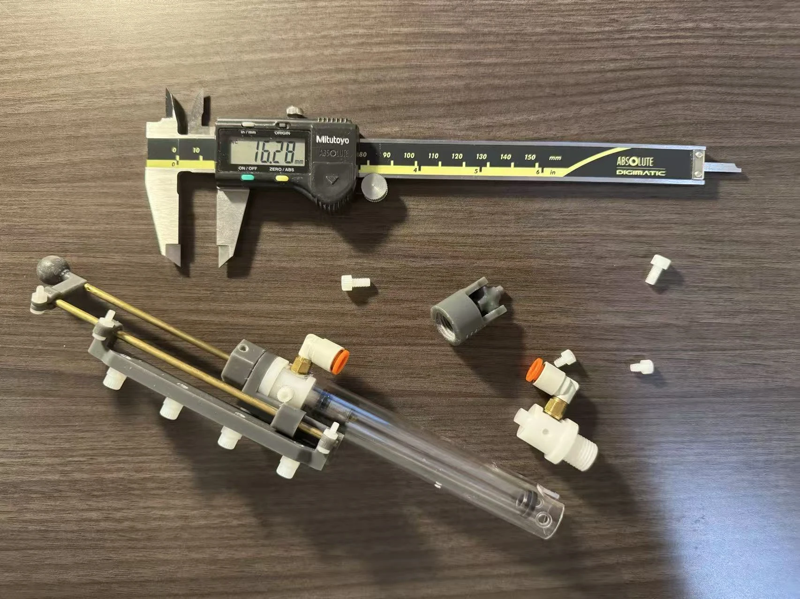

MRI needle intervention
A compact needle-positioning mechanism designed for image-guided intervention research.
In Georgia Tech's BioMedical Mechatronics Lab, I worked on a compact, modular mechanism for image-guided needle positioning. The design has to account for the patient, the needle path, the MRI bore, and receive-coil clearance while leaving space to assemble and service the mechanism.
I use SolidWorks to develop the positioning geometry and examine how actuator motion changes the needle orientation. The mechanical work includes actuator linkages, pivot constraints, ball-joint interfaces, worm-drive concepts, and a removable needle-insertion module. Separating these modules makes it possible to revise one mechanism without rebuilding the complete platform.
I reconstructed an earlier pneumatic actuator from hardware and STEP geometry before revising the surrounding structure. I iterated the ball-joint layout, pivot locations, and tilt range to examine the available workspace. Rapid prototypes connect the CAD layout to real interfaces, fasteners, and assembly access. The hardware photo below shows a transparent-cylinder actuator with guide rods and ball-joint components.
This work combines mechanism design, CAD assembly, dimensional inspection, and rapid prototyping. The interactive twin provides the complete assembly and an isolated actuator view so the relationships between the parts can be inspected.
The current device is a mechanical research prototype. The work focuses on mechanical feasibility, packaging, and assembly, using CAD revisions and physical parts to examine how the mechanism fits together.
Gallery
